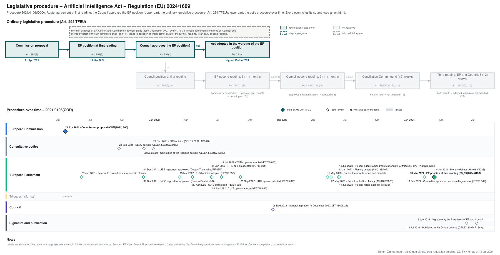

Regulations › Artificial Intelligence Act › Legislative procedure
Artificial Intelligence Act – Regulation (EU) 2024/1689
Procedure 2021/0106(COD), completed. Procedure drawing (PNG, SVG, PDF, draw.io, slide 16:9) · Page as Markdown: ai-act.md
| Stage | Completed, published 12 Jul 2024 |
|---|---|
| Route (Art. 294 TFEU) | Agreement at first reading: the Council approved the EP position |
| Latest activity | 12 Jul 2024 · Signature and publication: Published in the Official Journal (CELEX 32024R1689) |
Documents
Newest first; what the status means is below the table.
| Date | Document | Kind | Subject | Status | Access | Released | Text |
|---|---|---|---|---|---|---|---|
| 4 Jun 2024 | PE 24/24 REV 1 | Council note | Regulation of the European Parliament and of the Council laying down harmonised rules on artificial intelligence and amending regulations (EC) no 300/2008, … | public status unknown | – | – | – |
| 22 May 2024 | ST 10199/24 | Council note | Voting result Regulation of the European Parliament and of the Council laying down harmonised rules on artificial intelligence and amending Regulations (EC) No … | public status unknown | – | – | – |
| 15 May 2024 | ST 9645/24 ADD 1 REV 1 | Council note | Draft Regulation of the European Parliament and of the Council laying down harmonised rules on artificial intelligence and amending Regulations (EC) No … | public status unknown | – | – | – |
| 15 May 2024 | ST 9645/24 ADD 1 REV 2 | Council note | Draft Regulation of the European Parliament and of the Council laying down harmonised rules on artificial intelligence and amending Regulations (EC) No … | public status unknown | – | – | – |
| 15 May 2024 | ST 9645/24 REV 1 | Council note | Draft Regulation of the European Parliament and of the Council laying down harmonised rules on artificial intelligence and amending Regulations (EC) No … | public status unknown | – | – | – |
| 14 May 2024 | ST 9645/24 | Council note | Draft Regulation of the European Parliament and of the Council laying down harmonised rules on artificial intelligence and amending Regulations (EC) No … | public status unknown | – | – | – |
| 14 May 2024 | ST 9645/24 ADD 1 | Council note | Draft Regulation of the European Parliament and of the Council laying down harmonised rules on artificial intelligence and amending Regulations (EC) No … | public status unknown | – | – | – |
| 13 May 2024 | ST 9823/24 | Council note | Information to the Council and request for endorsement to sign on behalf of the EU the AI Seoul Summit Leaders’ Declaration, the Ministers’ Statement, as well … | public status unknown | – | – | – |
| 8 May 2024 | ST 9794/24 | Council note | AOB Framework Convention on Artificial Intelligence, Human Rights, Democracy and the Rule of Law - Information from the Commission | public status unknown | – | – | – |
| 18 Mar 2024 | ST 7536/24 | Council note | Outcome of the European Parliament's first reading (Strasbourg, 11 to 14 March 2024) | public status unknown | – | – | – |
| 13 Mar 2024 | P9_TA(2024)0138 | EP position | Artificial Intelligence Act | public | – | – | – |
| 5 Mar 2024 | PE 24/24 | Council note | Regulation of the European Parliament and of the Council laying down harmonised rules on artificial intelligence and amending Regulations (EC) No 300/2008, … | public status unknown | – | – | – |
| 2 Feb 2024 | PE758.862 | Provisional agreement | Provisional agreement resulting from interinstitutional negotiations Proposal for a regulation laying down harmonised rules on Artificial Intelligence … | public | – | – | – |
| 14 Jun 2023 | P9_TA(2023)0236 | EP position | Artificial Intelligence Act | public | – | – | – |
| 22 May 2023 | A9-0188/2023 | EP committee report | Report on the proposal for a regulation of the European Parliament and of the Council on laying down harmonised rules on Artificial Intelligence (Artificial … | public | – | – | – |
| 6 Dec 2022 | ST 15698/22 | Council position (mandate) | General approach (6 December 2022) | public | – | – | – |
| 12 Sep 2022 | PE719.827 | EP opinion | Opinion on the proposal for a regulation of the European Parliament and of the Council laying down harmonised rules on artificial intelligence (Artificial … | public | – | – | – |
| 12 Jul 2022 | PE730.085 | EP opinion | Opinion on the proposal for a regulation of the European Parliament and of the Council laying down harmonised rules on artificial intelligence (artificial … | public | – | – | – |
| 16 Jun 2022 | PE719.637 | EP opinion | Opinion on the proposal for a regulation of the European Parliament and of the Council laying down harmonised rules on artificial intelligence (Artificial … | public | – | – | – |
| 14 Jun 2022 | PE719.801 | EP opinion | Opinion on the proposal for a regulation of the European Parliament and of the Council laying down harmonised rules on artificial intelligence (Artificial … | public | – | – | – |
| 22 Apr 2022 | PE699.056 | EP opinion | Opinion on the proposal for a regulation of the European Parliament and of the Council laying down harmonised rules on Artificial Intelligence (Artificial … | public | – | – | – |
| 22 Apr 2022 | ST 8364/22 | Council: transmission note | Opinion on the application of the Principles of Subsidiarity and Proportionality | public status unknown | – | – | – |
| 20 Apr 2022 | PE731.563 | EP draft report (rapporteur) | DRAFT REPORT on the proposal for a regulation of the European Parliament and of the Council on harmonised rules on Artificial Intelligence (Artificial … | public | – | – | – |
| 29 Mar 2022 | PE730.085 | EP draft opinion | DRAFT OPINION on the proposal for a regulation of the European Parliament and of the Council laying down harmonised rules on artificial intelligence … | public | – | – | – |
| 3 Mar 2022 | PE719.801 | EP draft opinion | DRAFT OPINION on the proposal for a regulation of the European Parliament and of the Council laying down harmonised rules on artificial intelligence … | public | – | – | – |
| 2 Mar 2022 | PE719.827 | EP draft opinion | DRAFT OPINION on the proposal for a regulation of the European Parliament and of the Council laying down harmonised rules on artificial intelligence … | public | – | – | – |
| 21 Feb 2022 | PE719.637 | EP draft opinion | DRAFT OPINION on the proposal for a regulation of the European Parliament and of the Council laying down harmonised rules on artificial intelligence … | public | – | – | – |
| 29 Dec 2021 | CELEX 52021AB0040 | Opinion | Opinion of the European Central Bank of 29 December 2021 on a proposal for a regulation laying down harmonised rules on artificial intelligence (CON/2021/40) … | public | – | – | – |
| 10 Dec 2021 | PE699.056 | EP draft opinion | DRAFT OPINION on the proposal for a regulation of the European Parliament and of the Council laying down harmonised rules on Artificial Intelligence … | public | – | – | – |
| 2 Dec 2021 | CELEX 52021AR2682 | Opinion | Opinion of the European Committee of the Regions — European approach to artificial intelligence — Artificial Intelligence Act (revised opinion) | public | – | – | – |
| 18 Oct 2021 | ST 12778/21 REV 1 | Council: transmission note | Communication from the Commission to the European Parliament, THE COUNCIL, the European economic and social committee and the committee of the regions … | public status unknown | – | – | – |
| 12 Oct 2021 | ST 12778/21 | Council: transmission note | Communication from the Commission to the European Parliament, THE COUNCIL, the European economic and social committee and the committee of the regions … | public status unknown | – | – | – |
| 22 Sep 2021 | CELEX 52021AE2482 | Opinion | Opinion of the European Economic and Social Committee on Proposal for a Regulation of the European Parliament and of the Council laying down harmonised rules … | public | – | – | – |
| 13 Aug 2021 | ST 11205/21 | Council: transmission note | Opinion on the application of the Principles of Subsidiarity and Proportionality | public status unknown | – | – | – |
| 13 Aug 2021 | ST 11217/21 | Council: transmission note | Opinion on the application of the Principles of Subsidiarity and Proportionality1 | public status unknown | – | – | – |
| 15 Jun 2021 | ST 9661/21 | Council note | Optional consultation of the Committee of the Regions | public status unknown | – | – | – |
| 14 Jun 2021 | ST 9797/21 | Council: transmission note | Opinion on the application of the Principles of Subsidiarity and Proportionality | public status unknown | – | – | – |
| 23 Apr 2021 | ST 8115/21 | Council: transmission note | Proposal for a Regulation of the European Parliament and of the Council laying down harmonised rules on artificial intelligence (artificial intelligence act) … | public status unknown | – | – | – |
| 23 Apr 2021 | ST 8115/21 ADD 1 | Council: transmission note | Annexes to the Proposal for a Regulation of the European Parliament and of the Council laying down harmonised rules on artificial intelligence (artificial … | public status unknown | – | – | – |
| 23 Apr 2021 | ST 8115/21 ADD 2 | Council: transmission note | Commission staff working document impact assessment Accompanying the Proposal for a Regulation of the European Parliament and of the Council laying down … | public status unknown | – | – | – |
| 23 Apr 2021 | ST 8115/21 ADD 3 | Council: transmission note | Commission staff working document impact assessment annexes Accompanying the Proposal for a Regulation of the European Parliament and of the Council laying … | public status unknown | – | – | – |
| 23 Apr 2021 | ST 8115/21 ADD 4 | Council: transmission note | Commission staff working document executive summary of the impact assessment report Accompanying the Proposal for a Regulation of the European Parliament and … | public status unknown | – | – | – |
| 23 Apr 2021 | ST 8115/21 ADD 5 | Council: transmission note | Regulatory scrutiny board opinion Proposal for a Regulation of the European Parliament and of the Council aying down harmonized rules on Artificial … | public status unknown | – | – | – |
Every document the Council register, the EU database of the Parliament of Austria or the EP lists for the procedure, with its state: public documents link to the official file; documents that are not public link to their entry in the Austrian database where there is one (metadata only). Status: public; not public; not public, leak available (an unofficial copy is known to circulate outside the institutions; it is neither published nor quoted here). Released: when a document listed as not public was released, by the date of the Council's public PDF (a technical date) or else the day our daily check found it public. Access, our estimate for a Council document that is not public: Request opens a prefilled request on AsktheEU, which the reader sends under their own name and which is then public there; Request running links a request already made there for the document, with its state (a reply not yet classified by the requester can be the institution's automatic receipt), and a finished one shows its outcome (e.g. Request rejected); Release expected gives the day by which this register usually releases such a document; – means nothing to ask for (public, or no position text).
Events
Newest first.
| Date | Actor | Event | Document | Source |
|---|---|---|---|---|
| 12 Jul 2024 | Signature and publication | Published in the Official Journal | CELEX 32024R1689 · en.md de.md | EP Open Data API, procedure 2021-0106 (publication official journal) |
| 13 Jun 2024 | Signature and publication | Signature by the Presidents of EP and Council | EP procedure file | EP Open Data API, procedure 2021-0106 (signature) |
| 13 Mar 2024 | European Parliament | EP position at first reading (Art. 294(3) TFEU) | P9_TA(2024)0138 | EP Open Data API, procedure 2021-0106 (plenary amend proposal) |
| 12 Mar 2024 | European Parliament | Plenary debate | A9-0188/2023 | EP Open Data API, procedure 2021-0106 (plenary debate) |
| 13 Feb 2024 | European Parliament | Committee approves provisional agreement | PE758.862 | EP Open Data API, procedure 2021-0106 (committee approve provisional agreement) |
| 14 Jun 2023 | European Parliament | Plenary refers back for trilogues | EP procedure file | EP Open Data API, procedure 2021-0106 (plenary refer committee interinstitutional negotiations) |
| 14 Jun 2023 | European Parliament | Plenary adopts amendments (mandate for trilogues) | P9_TA(2023)0236 | EP Open Data API, procedure 2021-0106 (plenary amend) |
| 13 Jun 2023 | European Parliament | Plenary debate | A9-0188/2023 | EP Open Data API, procedure 2021-0106 (plenary debate) |
| 22 May 2023 | European Parliament | Report tabled for plenary | A9-0188/2023 | EP Open Data API, procedure 2021-0106 (tabling plenary) |
| 11 May 2023 | European Parliament | Committee adopts report and mandate | EP procedure file | EP Open Data API, procedure 2021-0106 (committee adopting report) |
| 6 Dec 2022 | Council | General approach (6 December 2022) | ST 15698/22 | Cellar procedure file 2021/106 (Council register) |
| 5 Sep 2022 | European Parliament | JURI opinion adopted | PE719.827 | EP Open Data API, procedure 2021-0106 (committee adopting opinion) |
| 12 Jul 2022 | European Parliament | TRAN opinion adopted | PE730.085 | EP Open Data API, procedure 2021-0106 (committee adopting opinion) |
| 15 Jun 2022 | European Parliament | CULT opinion adopted | PE719.637 | EP Open Data API, procedure 2021-0106 (committee adopting opinion) |
| 14 Jun 2022 | European Parliament | ITRE opinion adopted | PE719.801 | EP Open Data API, procedure 2021-0106 (committee adopting opinion) |
| 20 Apr 2022 | European Parliament | CJ40 draft report | PE731.563 | EP Open Data API, procedure 2021-0106 (committee tabling report) |
| 15 Mar 2022 | European Parliament | ENVI opinion adopted | PE699.056 | EP Open Data API, procedure 2021-0106 (committee adopting opinion) |
| 29 Dec 2021 | Consultative bodies | ECB opinion | CELEX 52021AB0040 | Cellar procedure file 2021/106 |
| 2 Dec 2021 | Consultative bodies | Committee of the Regions opinion | CELEX 52021AR2682 | Cellar procedure file 2021/106 |
| 1 Dec 2021 | European Parliament | IMCO rapporteur appointed (Brando Benifei, S-D) | EP procedure file | EP Open Data API, procedure 2021-0106 (participation RAPPORTEUR) |
| 1 Dec 2021 | European Parliament | LIBE rapporteur appointed (Dragoş Tudorache, RENEW) | EP procedure file | EP Open Data API, procedure 2021-0106 (participation RAPPORTEUR) |
| 22 Sep 2021 | Consultative bodies | EESC opinion | CELEX 52021AE2482 | Cellar procedure file 2021/106 |
| 7 Jun 2021 | European Parliament | Referral to committee announced in plenary | EP procedure file | EP Open Data API, procedure 2021-0106 (referral) |
| 21 Apr 2021 | European Commission | Commission proposal (Art. 294(2) TFEU) | COM(2021) 206 | Cellar procedure file 2021/106 (CELEX 52021PC0206) |
Procedure drawing

Download: PNG · SVG · PDF · draw.io ·


European Parliament committees
| Committee | Role | Rapporteur | Shadow rapporteurs |
|---|---|---|---|
| IMCO Internal Market and Consumer Protection | Responsible | Brando Benifei (S&D), appointed 1 Dec 2021 | Jean-Lin Lacapelle (ID), Deirdre Clune (EPP), Kosma Złotowski (ECR), Svenja Hahn (Renew), Kim Van Sparrentak (Greens/EFA), Kateřina Konečná (The Left) |
| LIBE Civil Liberties, Justice and Home Affairs | Responsible | Dragoş Tudorache (Renew), appointed 1 Dec 2021 | Jaak Madison (ID), Axel Voss (EPP), Petar Vitanov (S&D), Rob Rooken (ECR), Sergey Lagodinsky (Greens/EFA), Cornelia Ernst (The Left) |
| ENVI Environment, Climate and Food Safety | Opinion | Susana Solís Pérez (Renew), appointed 15 Sep 2021 | – |
| TRAN Transport and Tourism | Opinion | Josianne Cutajar (S&D), appointed 4 Nov 2021 | – |
| CULT Culture and Education | Role not given | Marcel Kolaja (Greens/EFA), appointed 13 Jul 2021 | – |
| ITRE Industry, Research and Energy | Role not given | Eva Maydell (EPP), appointed 11 Jan 2022 | – |
| JURI Legal Affairs | Role not given | Axel Voss (EPP), appointed 10 Jan 2022 | – |
Source: EP Open Data API (participations) and the Legislative Observatory (joint committee, opinions declined); names link to each Member's page on the EP website. The API names no committee for shadow rapporteurs; they are assigned by the EP's order of participants, which groups each committee.
Plenary votes
13 Mar 2024 · Artificial Intelligence Act ***I
1 vote: 1 adopted.
| Provision | Amendment | Tabled by | Outcome | For / against / abstain | Groups in favour |
|---|---|---|---|---|---|
| Provisional agreement | Am 808 | committee | adopted | 523 / 46 / 49 | ECR, ID, NI, PPE, Renew, S&D, Verts/ALE |
14 Jun 2023 · Artificial Intelligence Act ***I
29 votes (the data of this sitting give no outcome per vote: see the counts).
| Provision | Amendment | Tabled by | Outcome | For / against / abstain | Groups in favour |
|---|---|---|---|---|---|
| Commission proposal | – | – | – | 499 / 28 / 93 | ECR, ID, NI, PPE, Renew, S&D, The Left, Verts/ALE |
| Amendments by the committee responsible – separate vote – Am 227 | – | – | – | 397 / 193 / 30 | ECR, ID, NI, Renew, S&D, The Left, Verts/ALE |
| Amendments by the committee responsible – separate vote – Am 494/2 | – | – | – | 554 / 51 / 15 | ECR, ID, NI, PPE, Renew, S&D, Verts/ALE |
| Article 1, before § 1 – Am 774 | – | – | – | 78 / 497 / 44 | NI, The Left |
| Article 2, § 3 – Am 792 | – | – | – | 140 / 471 / 6 | ECR, ID |
| Article 3, § 1, after point 1 – Am 775 | – | – | – | 101 / 511 / 4 | ID, The Left |
| Article 5, § 1, point c, introductory part – Am 804 | – | – | – | 74 / 524 / 22 | ID |
| Article 5, § 1, point c, point i | – | – | – | 547 / 53 / 18 | ECR, NI, PPE, Renew, S&D, The Left, Verts/ALE |
| Article 5, § 1, point c, point ii | – | – | – | 549 / 51 / 22 | ECR, NI, PPE, Renew, S&D, The Left, Verts/ALE |
| Article 5, § 1, point d – Am 220-223 | – | – | – | 335 / 235 / 49 | NI, Renew, S&D, The Left, Verts/ALE |
| Article 5, § 1, after point d – Am 772 | – | – | – | 249 / 360 / 11 | NI, S&D, The Left, Verts/ALE |
| Article 5, § 1, after point d – Am 773 | – | – | – | 245 / 358 / 12 | S&D, The Left, Verts/ALE |
| Article 5, § 1, after point d – Am 776= | – | – | – | 277 / 306 / 38 | NI, S&D, The Left, Verts/ALE |
| Article 5, after § 2 – Am 778 | – | – | – | 102 / 497 / 13 | NI, The Left |
| Article 5, after § 2 – Am 779 | – | – | – | 108 / 489 / 8 | The Left |
| Article 5, after § 2 – Am 780 | – | – | – | 109 / 490 / 12 | The Left |
| After Article 5 – Am 801/1 | – | – | – | 268 / 300 / 48 | ECR, ID, NI, PPE |
| Article 6, § 2 – Am 781 | – | – | – | 130 / 479 / 8 | ID, The Left |
| Article 6, § 2 – Am 234/2 | – | – | – | 542 / 62 / 11 | ECR, ID, NI, PPE, Renew, S&D, Verts/ALE |
| Article 10, § 5 – Am 782D | – | – | – | 97 / 502 / 20 | The Left |
| Article 29, after § 5 – Am 783 | – | – | – | 103 / 486 / 28 | NI, The Left |
| Article 54 – Am 784D | – | – | – | 87 / 520 / 11 | The Left |
| After Article 68 – Am 785 | – | – | – | 109 / 501 / 10 | NI, The Left |
| After Article 68 – Am 786 | – | – | – | 112 / 502 / 3 | The Left |
| Article 84, after § 3 – Am 798 | – | – | – | 164 / 423 / 33 | ECR, ID, NI |
| Annex VIII, after point 5 – Am 789 | – | – | – | 108 / 477 / 32 | The Left |
| Annex VIII, after point 5 – Am 788 | – | – | – | 110 / 484 / 17 | The Left |
| After recital 2 – Am 791 | – | – | – | 158 / 439 / 19 | ECR, ID |
| After recital 18 – Am 800 | – | – | – | 233 / 327 / 59 | ECR, ID, PPE |
Votes by political group; no Member's vote is shown. A group counts as in favour where more of its Members voted for than against. Groups are those the Members belonged to on the day of the sitting (from their memberships, b471); a Member without a group membership that day is in the totals but in no group. Source: European Parliament Open Data Portal, vote results and decisions of the sitting. The outcome of a single amendment, and the vote on the proposal as amended, are not law; Parliament's first-reading position exists only where it closes the reading without a referral back.
Texts as Markdown
Newest first. Unofficial Markdown conversions for reading, searching and project folders; only the official document is authentic. "Read" opens the rendered text on GitHub, where a link to a provision (#art-13, #rec-12, #annex-i) jumps to it.
| Date | Stage | Document | Markdown | Read |
|---|---|---|---|---|
| 27 Jul 2026 | Consolidated version | CELEX 02024R1689-20260727 | en de | GitHub |
| 9 Oct 2025 | Corrigendum | CELEX 32024R1689R(01) | de | GitHub |
| 12 Jul 2024 | Official Journal | CELEX 32024R1689 | en de | GitHub |
What applies under this act is on its act page: Standardisation · Committees and expert groups.